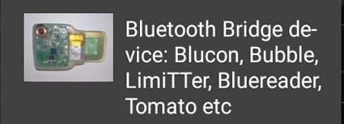
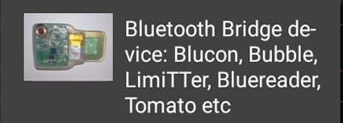
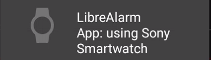
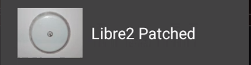
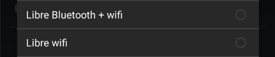
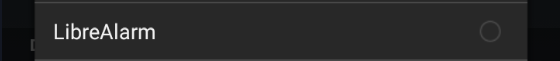
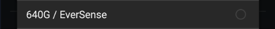

Data source
Until a blood glucose data source is selected, xDrip+ will show the data source wizard. You can enable or disable it using the blood drop menu, then Source wizard button.
Scroll down until you see your sensor or use case.
G6, G7, 1, 1+ and Stelo⌁
If you connect xDrip+ directly to your sensor (G6, G7, 1, 1+ and Stelo), you will not be able to use the vendor app, upload to Clarity (you can use Nightscout or Tidepool). You might be able to use sharing through share servers but it needs to be setup with the vendor apps first.
If you use the vendor apps (G6, G7, 1+), you can connect xDrip+ as a Share follower as long as a follower has been setup with the vendor apps.

When using BYODA (G6 only) if you've enabled Broadcast to xDrip+ you don't need a network connection to have data in xDrip+. Use the 640G/Eversense data source
You can add xDrip+ to your current setup and select Companion app to have xDrip+ read BG from the vendor app notifications (G6, G7, 1, 1+, Stelo). Note Stelo gives readings every 15 minutes with the vendor app.
And this is also possible if you use CamAPS, still using the Companion app data source

Libre⌁
xDrip+ connects directly to Libre 2/2+ EU, you can use Libre 1 and 14 days US with a bridge device. Other Libre 2 and 3 sensors are not directly supported.
You can connect Libre 2/2+ EU to xDrip+, adding OOP2. You cannot use the vendor app for alarms (just NFC scans) and upload data to the vendor servers (use Nightscout or Tidepool). Use the Libre Bluetooth data source.
Since Libre 1 don't have bluetooth, you need to add a bridge device. Use the Libre Bluetooth data source.
Some of these bridges also work with Libre 2/2+ EU. Check your sensor doesn't require an OOP.
The patched app can send data to xDrip+, note it's now a very old app and it probably won't work on recent phones.
For non-supported sensors (Libre 2/2+ non-EU and Libre 3/3+) you can also use Diabox or Juggluco, then broadcast data to xDrip+ that will receive data from the Libre 2 patched data source (not the patched app itself).
You can follow a Libre 2/2+ CGM or a Libre 3/3+ with xDrip+ with the Web follower data source.
Guardian and Minimed⌁
With a 640G/670G pump you need to get BG data from the pump using a glucometer connected to your phone with an OTG cable.

You can add xDrip+ to your current setup and select Companion app to have xDrip+ read BG from the vendor app notifications.
You can follow sensor data when shared through Carelink, but this feature might be broken frequently by the vendor.
Aidex⌁
You can receive data from the vendor app into xDrip+.
You can add xDrip+ to your current setup and select Companion app to have xDrip+ read BG from the vendor app notifications.
Sibionics⌁
The patched app will allow you to use xDrip+ with the 640G/Eversense data source.
CareSens Air⌁
You can receive data from the vendor app into xDrip+ with the CareSens Air (or 640G/Eversense) data source.
Bluetooth connection to a sensor or a bridge⌁
When connecting xDrip+ directly to a sensor, it will take care of the Bluetooth connection or to the Bluetooth device sending data from your device (called a bridge).
Warning
Do NOT try to use Android Settings -> Connections -> Bluetooth to connect!
If your bridge paired to Android, unpair it before continuing.

One device at a time
Sensors and bridges can only connect to one smartphone (or tablet) at a time, and only to one app at a time.
You should uninstall the vendor app in order to connect xDrip+ to your sensor or bridge.
If another device is connect to your sensor or bridge you should turn it off or disable the other app before trying to connect with xDrip+.
You cannot connect to two phones or applications. With an exception for Dex G6/G7/1 and 1+: the second device can only be a receiver/connected pump or a BlueJay watch.
You should now see the the data source selection wizard.
If you don't, touching this button will display the wizard.

If the button is not visible you can display it using a long touch on the xDrip+ icon and enabling the Source Wizard Button.
Sensor selection⌁
Unused and obsolete sensors have been removed from this documentation.
The following sensors are supported directly by xDrip+:⌁
- G4 (with bridge) or G4 Platinum receiver

- G5

- G6, G7, 1 and 1+

- Libre (with bridge)
 
 - Libre with patched SWR50 smartwatch
 - Libre 2 (only EU)
- Medtrum A6/S7

- CareSens Air
The following sensors and features are supported with a companion app:⌁
- Libre 2 (only EU)
 - Eversense
- 640G/670G pumps
- Build your own app (BYODA) for G6 sensors
- Aidex
See below GlucoRx/Aidex. - Companion app for G6, G7, 1, 1+, CamAPS and Eversense
See below.
Follower mode⌁
- xDrip+ Sync (requires Google Play Services)
- Nightscout

- Dex Share

- Libre Web Follower
See below. - CareLink Follower
See below.
Changing data source⌁
You can select another data source without using the wizard from the settings menu:

Settings
Hardware Data Source
G4 (with bridge) or G4 Platinum receiver




Libre with patched SWR50 smartwatch

Libre 2 (only EU), Diabox or Juggluco

640G/670G pumps, Eversense and Build your own app (BYODA)



Companion app for G6, G7, One and CamAPS

Web Follower for Libre 2 CGM and Libre 3

Disable Collection⌁
If you want to disable xDrip+.